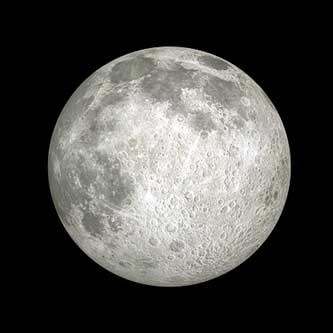
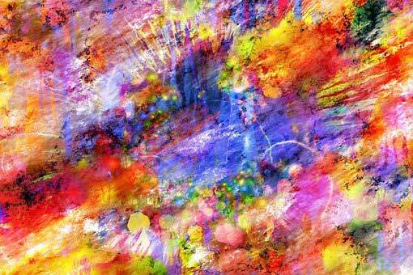

Diana, I fear the light
Written 1972

I fear the darkness with its hidden panels of illusions and myths.
But I also love the darkness;
I find my time to break down and imagine.
The practical of the day becomes the peculiar of the night.
Everything takes on a new cover.
My mirror becomes hidden words.
My eyes become magnets of shadows and every noise becomes cries of those shadows.
I surround myself in darkness and throw away the adulthood of too much knowledge.
I laugh and dance and sing in unreal and play hide and seek with reality.
In my games, I wonder, what is real?
Do our eyes tell us lies of make-believe in the too much brightness of day?
Do we see the realness of the word when darkness comes to rest our eyes from the light?
Or are we completely fooled by day and night and we are our own illusions?
I fear the darkness and I fear my love for it.
But I would not give it up.
I find my laughter and my life in these empty spaces of time.
See More
Man
Written in 1973

Colors;
clear and translucent
he can see and be seen
yet he hides and is blind.
one color
solid with a purpose
but a blend of pastels
he cannot decide.
Colors;
black and deep
he is filled with sorrow
but he is framed in white
he does have hope.
Colors;
red with fire
he fights for his beliefs
but he is dyed in green
He wants to grow and learn.
Colors;
yellow like the sun
he has ideals of perfection
but his body is pale
he is only a man.
See More